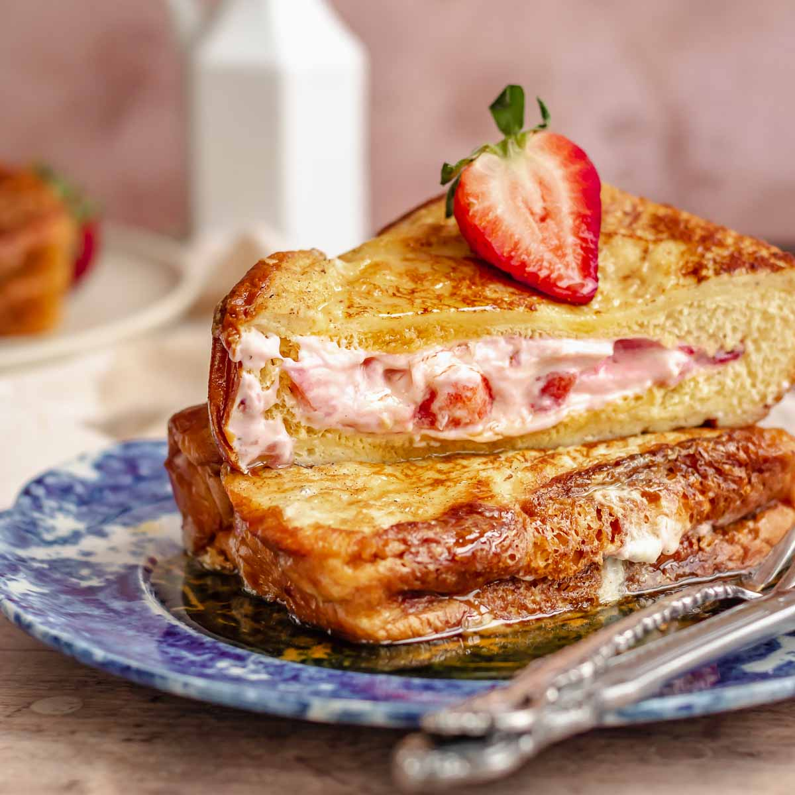

Strawberry Cheesecake French Toast

Description
French toast is a dish of sliced bread
soaked in beaten eggs and often milk or
cream, then pan fried. Alternative names
and variants include "eggy bread", "Bombay
toast", "gypsy toast", and "poor knights"
(of Windsor).
The dish usually served for breakfast in which
bread is dipped into eggs and seasonings and
then fried to a golden brown. French toast is
often topped with butter, preserves, or syrup.
It is often used as a method to use up French
bread that is a day or two old and has started
to dry out.
Ingredients
- 1 cup mashed fresh strawberries
- 1/2 cup white sugar
- 2 tablespoons cornstarch
- 1 cup water
- 1 cup milk
- 6 eggs
- 1(8 ounce) package cream cheese, softened
- 1 teaspoon vanilla extract
- 3/4 cup white sugar
- 8 slices bread, cut in half diagonally
- 1 teaspoon butter
- 8 sliced fresh strawberries
- 1 tablespoon confectioners' sugar for dusting
- 1 cup whipped cream
Steps
- Preheat an oven to 100 degrees F (40 degrees C).
- Heat mashed strawberries and 1/2 cup white sugar in a
saucepan over medium heat.
- Mix cornstarch and water together in a bowl, then stir
into the strawberries.
- Cook and stir until thickened, about 5 minutes. Reduce heat
to low and simmer while preparing remaining ingredients,
stirring occasionally.
- Whisk together the milk and eggs in a bowl; set aside.
- Mash cream cheese, vanilla extract, and 3/4 cup white sugar
in a bowl until smooth.
- Spread the cream cheese mixture over a triangle-shaped piece of
bread, and top with another piece. Repeat with remaining bread
and cream cheese mixture to make 8 triangle-shaped sandwiches.
- Heat butter in a large skillet over medium heat.
- Dip the sandwiches into the egg mixture, 2 or 3 at a time, and place
in the skillet.
- Cook until golden brown on both sides, about 3 minutes per side.
- Transfer pan-fried sandwiches to a baking sheet and place in the
preheated oven to keep warm while cooking remaining sandwiches.
- To serve, top French toast with warm strawberry glaze and sliced fresh
strawberries and sprinkle with confectioners' sugar. Serve with a dollop
of whipped cream.